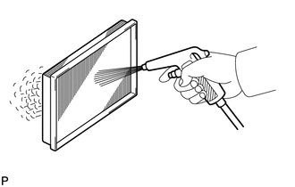

Tech Tips
Perform these procedures after the engine has cooled down.
INSPECT ENGINE OIL
Check the engine oil.
REPLACE ENGINE OIL AND OIL FILTER
Replace the engine oil and oil filter.
INSPECT COOLING AND HEATER SYSTEM
Check that the radiator and condenser are not blocked with leaves, dirt or insects, and clean them if necessary. Also check the hose connection for the installation condition, corrosion, etc.
INSPECT ENGINE COOLANT
Check the engine coolant.
REPLACE ENGINE COOLANT
Replace the engine coolant.
INSPECT SPARK PLUGS
Check the spark plugs.
INSPECT AUXILIARY BATTERY
Check the auxiliary battery.
INSPECT AIR CLEANER FILTER ELEMENT
Remove the air cleaner filter element.

Check that the air cleaner filter element is not excessively dirty.
If the air cleaner filter element is excessively dirty, replace the air cleaner filter element.
If cleaning the air cleaner filter element, blow compressed air as shown in the illustration to clean it.
Reinstall the air cleaner filter element.
INSPECT EXHAUST PIPES AND MOUNTINGS
Visually check the pipes, hangers and connections for severe corrosion, leaks or damage.
INSPECT FUEL TANK CAP GASKET
Check the fuel tank cap gasket.
2ZR-FXE (w/ Canister Pump Module): Click here
2ZR-FXE (w/o Canister Pump Module): Click here
INSPECT FUEL LINES, CONNECTIONS, AND FUEL TANK VAPOR VENT SYSTEM HOSES
Visually check the fuel lines and hoses for cracks, leaks, loose connections, or deformation.
INSPECT CHARCOAL CANISTER
Check the charcoal canister.
2ZR-FXE (w/ Canister Pump Module): Click here
2ZR-FXE (w/o Canister Pump Module): Click here